¶ To let the air/fuel mixture in to the engine we have intake valves. To let it out we have exhaust valves. However, if these valves don't open and close at the right time the engine will not run. Worse still, if the valves open at the wrong time they can be hit by the piston and bent.

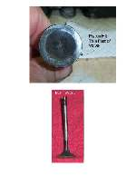
Assembly actually starts with disassembly. What do I mean? Well, LOOK at the camshaft marks BEFORE you take it apart. Set the engine at TDC (Top-Dead-Center) Of the compression stroke (TDC on the #1 cylinder if it a multi cylinder engine). Do the marks on the cam or cam sprocket match up with what the manual says? If they DON'T, I write down the marks that are used and how they are used so that on reassembly I can reproduce the correct cam (valve) timing. On twin cam engines I count the number of cam chain rollers from the exhaust cam mark to the intake cam mark and write that down too. I do this on every four stroke engine I disassemble.
Well, I'm SUPPOSED to do this. On the last engine I rebuilt I forgot to do it, trusting in the factory shop manual I had. Then I discovered it had some weird, aftermarket, simi adjustable, cam sprockets. GREAT. I go to reassemble the engine and the marks DO NOT MATCH the marks given in the factory shop manual. Now what? Who knows who made these cam sprockets and what marks they used. I try what seem to be the factory marks but the cam lobes just don't look positioned right. I try some other marks and that looks better. I put it together... Runs great. ALWAYS check the timing marks. You can even make your own set of marks. I have found that even the factory manuals can be wrong. (The manual was wrong on my Chevy LOVE truck. Factory manual cam marks were 180 degrees off)
To make your own marks (BEFORE you take it apart) just set (turn) the crankshaft so the #1 cylinder is at TDC (Top-Dead-Center) on the compression stroke (Both intake and exhaust valves closed) and then make some marks on the camshaft sprocket(s) and a corresponding mark on the cylinder head. Use white paint. I suppose you could use a small punch mark, but I like paint better. If it's a twin cam engine count the number of rollers between marks you put on the camshaft intake and exhaust sprockets. Write it all down or take a digital picture of it. You probably will never have to do this, but you can if it's necessary.
You can do this for other settings too. On that big rebuild I just mentioned. This engine had a counter balancer in it. I had two different manuals. The factory manual AND an after market manual from a well known publisher. I looked and looked in both manuals and they simply did not cover setting up the timing on that balancer. MAN, this is important. Get the balancer timing off and this engine will Wiggle like a Belly dancer ! I finally found some sort of instructions in a completely different part of the manual. One sentence. Not a word on how to time it right in the balancer section of the manual. I did make careful notes on this balancer when I disassembled it and I found the balancer marks too. No thanks to $90.00 worth of manuals. Sooo... if in doubt make your own marks. Why I didn't do it on the camshaft timing marks, which is the whole object of this page.... eludes me. I guess we all fall short.
Every time we assemble a four stroke engine we have to set the valve timing. It's quite simple but very important. Set the engine at Top-Dead-Center (TDC) of the compression stroke, set the timing marks on the cam and you are done. Sounds so easy does it not? It really is, but here are some things to remember.
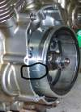
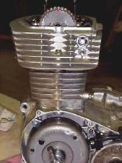 Timing Mark. |
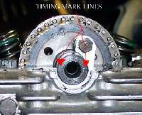 Timing Line on Cam. |
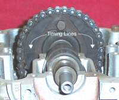 Timing Lines on Cam Sprocket. |
Be sure to leave the camchain tensioner off till everything is lined up and the cam bearing caps torqued down. If you didn't replace the cam chain the marks may not line up exactly. This is due to the cam chain lengthening as it wears. Use your own discretion as to which cam sprocket tooth brings the marks closest to alignment. Now put on the cam chain tensioner and recheck the marks. You may have to do it several times to get everything right. Keep checking TDC on the flywheel, in case the crankshaft moved a bit.
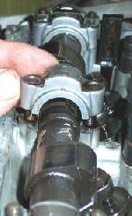 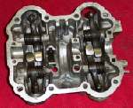
Like the saying goes...
On Multi Cylinder, Twin Cam, engines the assembly drill is a bit different. Both intake and exhaust cams must be timed right. Again, set the number one piston at TDC on the compression stroke. Now position each cam so the timing marks Match. The intake cam will usually have a "IN" stamped on it and the exhaust cam will have an "EX". Don't get them mixed up. You will also notice that, at TDC on the exhaust stroke, both valves are open. The intake valve is opening and the exhaust valve is closing. This is called "Valve Overlap", also know as "Rockover". This is normal.
On most Hondas and Yamahas the marks are dots or lines on the camshafts that match with a dot or arrow on the camshaft bearing cap.
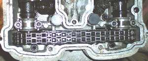 Yamaha Twin Cam Timing. |
On most Kawasaki and Suzuki engines the marks are lines on the cam sparockets and should be even with the top edge of the cylinder head. There is one extra thing on Kawasakis and Suzukis. Count the number of cam chain rollers from the exhaust timing mark to the intake timing mark. The correct number will vary with each engine (Usually 18-31 rollers or so). Check your shop manual. Here too, go slow. Same as a single cam engine. Tighten everything a little at a time. Things should go together smoothly without binding. Remember to put the Cam Chain Tensioner on and then recheck everything.
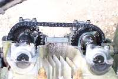 Suzuki Twin Cam Timing. |
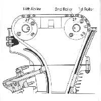 Suzuki Twin Cam Timing. |
The more times you recheck the less errors you will make.
The old British bikes like Triumph, BSA, Norton and the like were pushrod engines and had their cams in their crankcases. Some had single cams and some had two cams. They all had to be timed just like their Over Head Cam (OHC) brethren. Their camshafts had gears on them with marks on the gears. These marks have to line up with similar marks on a gear positioned on the crankshaft.
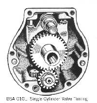 BSA Single Cylinder Valve Timing |
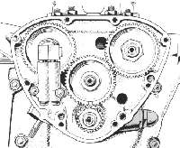 Old Triumph Twin Valve Timing |
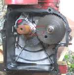

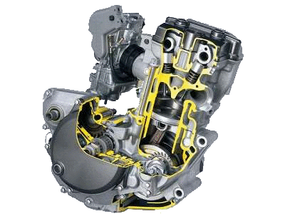 |
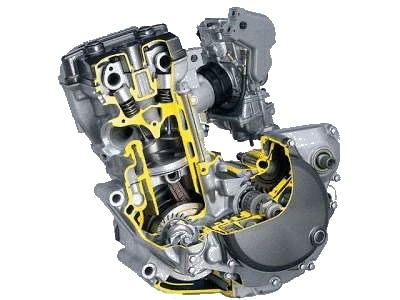 |
Copyright © 1999-2006 dansmc.com. All rights reserved.